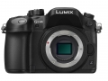

器材库 > APS及其以下画幅可换镜头数码相机 > GH4

规格总览
产品类型
4/3画幅可换镜头数码相机
发布日期
2014-07-28
厂家推荐价格
11,000.00 （人民币）
影像规格
影像传感器
Live MOS
影像传感器尺寸
17.3 x 13.0
总像素
1720万
有效像素
1605万
色彩空间
sRGB/Adobe RGB
最大解像度
4608x3456
静态图像尺寸
4608x3456、3264x2448 2336x1752、1824x1368（3D）
静态图像格式
JPEG, RAW, MPO
画幅比
3:2, 4:3, 16:9, 1:1
短片尺寸
[4K] 3840x2160, 29.97p [4K] 3840x2160, 23.98p 1920x1080, 59.94p 1920x1080, 29.97p 1920x1080, 23.98p
短片格式
MOV, AVCHD, MP4
除尘系统
SSWF超声波除尘
镜头和对焦
镜头卡口
4/3
兼容镜头
M4/3
对焦点
49
对焦模式
AF系统“空间识别技术”DFD
AF辅助灯
有
手动对焦
支持
曝光控制
测光模式
中央重点测光, 多分区评价测光, 点测光
测光范围
0-18EVEV
曝光模式
P（程序自动曝光）, A（光圈优先自动曝光）, S（快门速度优先自动曝光）, M（手动测光曝光）
场景模式
3D（照片）
快门速度
1/8000秒
闪光同步速度
1/250秒
曝光补偿
±3EV以1/3EV级调整
自动曝光锁
有
ISO感光度
范围：ISO 100-25600,自动（ISO 100-25600）
白平衡
多云, 白炽灯, 闪光灯, 阴天, 荧光灯, 自定义, 阴影, 自动, 钨丝灯, 日光灯, 晴天
连拍
AFS12张/秒，AFC7.5张/秒
闪光灯
内置闪光灯
弹出式
闪光模式
TTL
取景器/显示屏
取景器
OLED电子取景器
取景范围
100%
取景放大倍率
0.67倍
屈光度调节范围
-4.0～+4.0（dpt）
LCD尺寸
3.0英寸
LCD像素
103.5万
视野率
100%%
LCD特性
翻转屏
Live View
有
文件输入/输出
存储卡
SD/SDHC, SDXC
数据接口
USB
视频/音频接口
HDMI 输出
无线功能
Wi-Fi
电源
续航能力
CIPA标准下可拍530张
机身规格
材质
全镁合金压铸
颜色
黑色
尺寸
132.9mm × 93.4mm × 83.9mmmm
重量
560g（含卡\电池），480g(仅机身)g
其它
备注
可通过DMW-YAGH扩展2个XLR接口、4个SDI接口
rqtommy2015-02-06 00:234.81 分
操作性 4.50功能性 5.00美观性 4.50趣味性 5.00耐用性 5.00性价比 4.50解像力 5.00色彩还原 5.00
产品图 / 样片
评测 / 相关文章
- ［试用］2014深圳马拉松的精彩瞬间 （存档）
- ［试用］松下GH4初上手4K视频打野鸟 （存档）
相关文章
- ［试用］2014深圳马拉松的精彩瞬间 （存档）
- ［试用］松下GH4初上手4K视频打野鸟 （存档）
- ［资讯］松下GH4转接富士龙广播镜头 （原站已下线）